C 方向 · V1.2 · 2026-10-29
设计资源与页面规范
从效果图找到页面，从样板复用组件，再用同一套素材与规则继续设计。
01
效果图
首页使用最右侧 C。七个核心页沿用同一视觉方向，点击图片可放大。
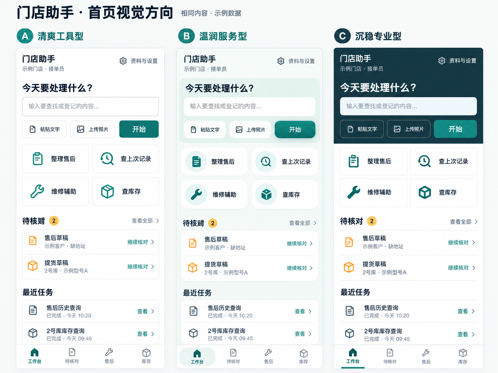
REF-C · 首页视觉基准
C · 已选A/B保留为历史探索，后续页面沿用C。
七个手机核心页


C方向于2026-10-26选定。工作台、待核对及七个核心业务视图已有本地交互样板，未接入后端；原图和截图均为示例数据。
02
HTML样板
核心前端、原工作台与组件页共用CSS变量与素材。当前与历史范围在映射表中列明。

核心前端 · 手机与电脑
工作台、待核对及七个业务完整视图，独立hash地址，本地交互与模拟确认。沿用C方向及已有素材。

工作台
任务输入、照片预览、待核对及业务演示入口。当前为本地前端样板。

视觉组件
配色、表面、按钮、字段、状态、列表、库存数字和SVG图标。
原ui-sample局部演示保留；核心业务页现有独立完整视图。全部仍为本地样板，未接入AI、真实手册、后端或正式业务登记。
页面映射与实现状态
| 页面 | 实现状态 | 代码/截图 |
|---|---|---|
| 工作台home | 完整视图交互样板（本地演示） | 独立页面 / 390px截图 |
| 待核对列表pending | 完整视图交互样板（本地演示） | 独立页面 / 390px截图 |
| 售后草稿核对service-draft | 完整视图交互样板（本地演示） | 独立页面 / 390px截图 |
| 售后检索与候选选择service-search | 完整视图交互样板（本地演示） | 独立页面 / 390px截图 |
| 售后档案详情service-detail | 完整视图交互样板（本地演示） | 独立页面 / 390px截图 |
| 维修辅助repair-assistant | 完整视图交互样板（本地演示） | 独立页面 / 390px截图 |
| 库存总览inventory | 完整视图交互样板（本地演示） | 独立页面 / 390px截图 |
| 预留提货确认reserved-pickup | 完整视图交互样板（本地演示） | 独立页面 / 390px截图 |
| 进货统计inbound-statistics | 完整视图交互样板（本地演示） | 独立页面 / 390px截图 |


python -m http.server 8765 --bind 127.0.0.1在项目根目录启动，访问 http://127.0.0.1:8765/docs/design/design-resources.html。本目录也可直接打开文件浏览。
03
设计资源
8张浏览器样板截图、4张比对图、18枚SVG和1张纹理均保留原路径。
产品 / 样板截图
前端样板的浏览器截图，日期是历史示例日期，并非实时业务数据。
工作台 · 390px
首页最终样板
390×844 · SHOT-HOME-390
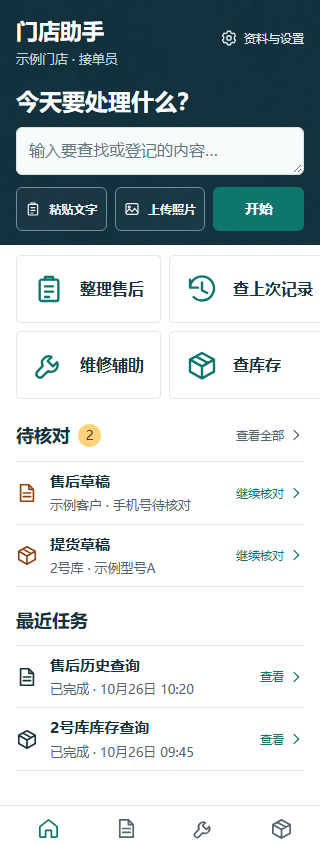
工作台 · 320px
窄屏验证
320×844 · SHOT-HOME-320
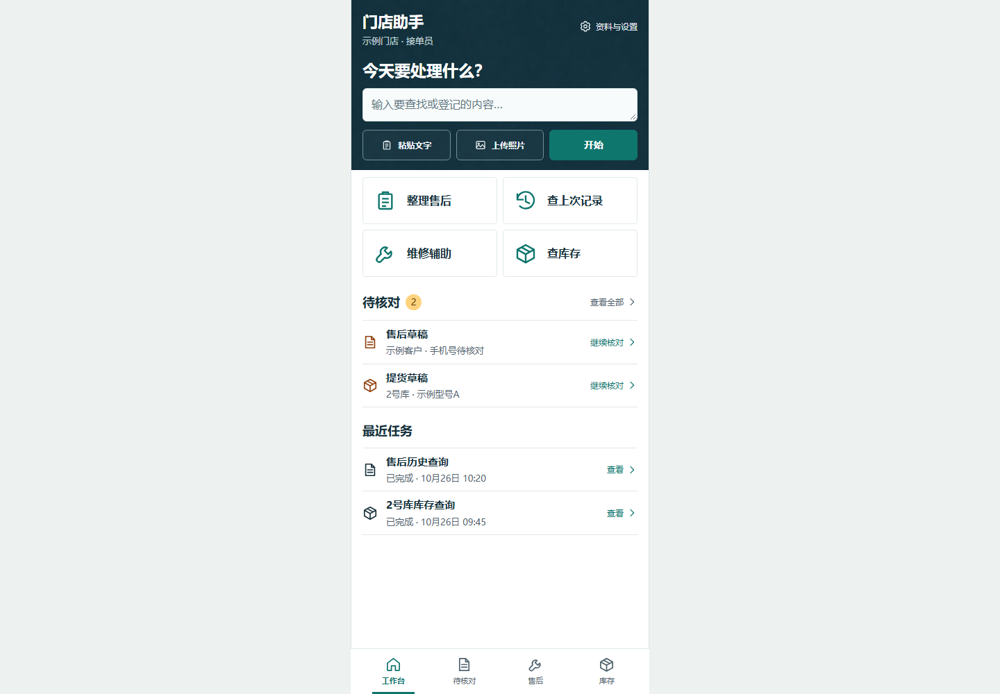
工作台 · 电脑预览
电脑中的手机样板，非桌面业务布局
1440×1000 · SHOT-HOME-DESKTOP
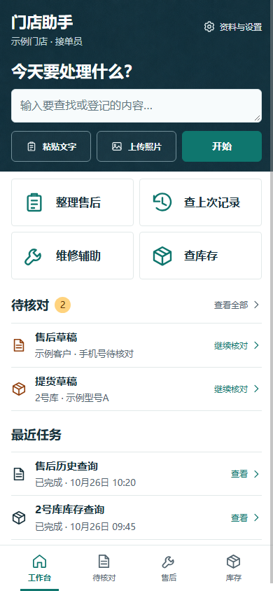
工作台 · 直接打开
file方式加载验证
390×844 · SHOT-HOME-FILE视觉组件 · 电脑
组件页首屏，非整页长截图
1440×1000 · SHOT-KIT-DESKTOP
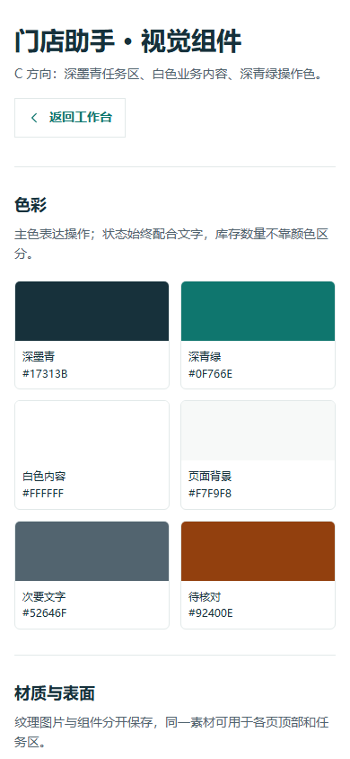
视觉组件 · 手机
组件页手机首屏
390×844 · SHOT-KIT-390
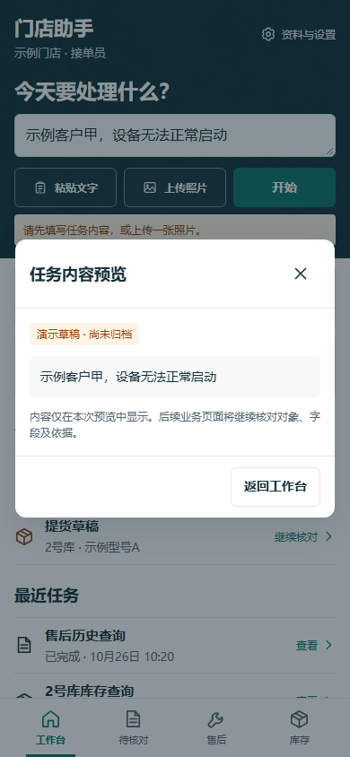
任务内容预览
输入后的演示草稿弹层
390×844 · SHOT-TASK
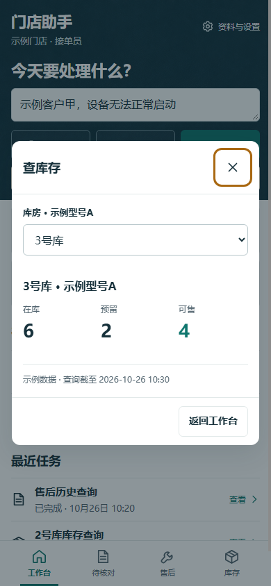
库存筛选演示
3号库筛选弹层，非完整库存页
390×844 · SHOT-INVENTORY视觉比对与历史记录 · 4张
初版仅作修正历史；当前基准看最终比对与最新HTML。

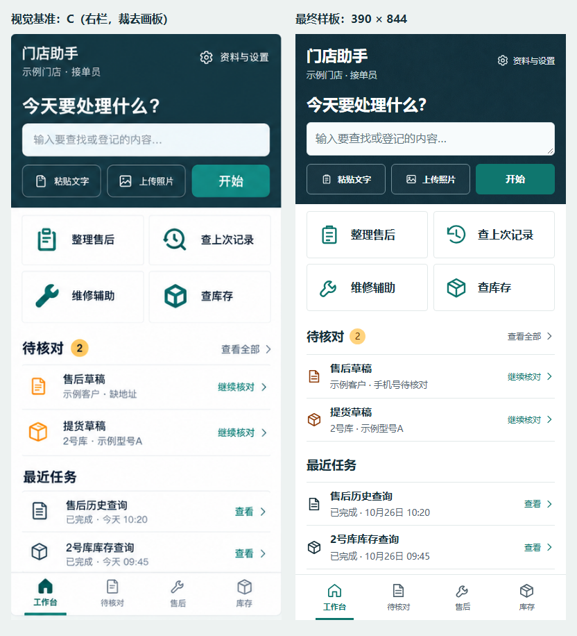
C源图与最终样板
当前核对证据
COMPARE-FINAL
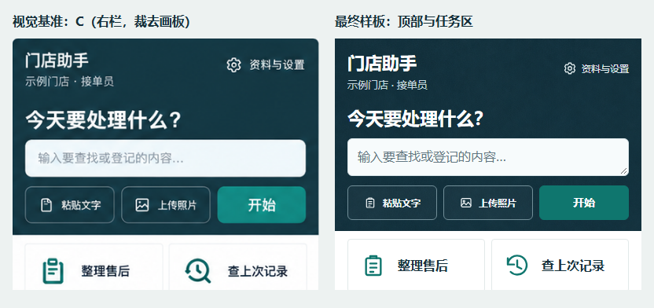
顶部与任务区
当前局部核对证据
COMPARE-HEADER
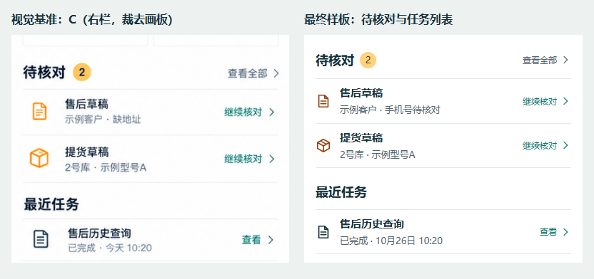
待核对与记录行
当前局部核对证据
COMPARE-LIST
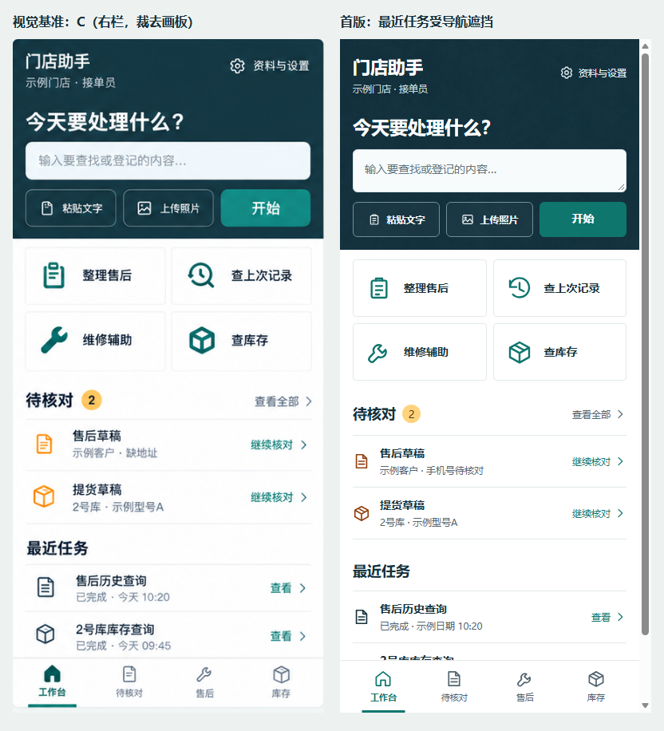
C源图与初版样板
历史：有遮挡和视口差异，不作为最新依据
COMPARE-INITIALSVG图标库
ICONS-01 · 点击复制内联引用代码。24×24画布、1.8描边、currentColor。

icons.svg是规范源；当前HTML为兼容直接打开，内联同一组symbol。复制的#id引用要求页面已有该symbol，HTTP页面也可跨文件引用。图标变更需同步副本。
通用纹理与表面
深墨青细颗粒
独立生成的位图，当前按628×628px重复铺设。
.material-ink白色业务表面
白色表面与轻边界的CSS组合，没有单独白色纹理图片。
.material-paper
纹理不保证数学意义的无缝，需核对实际铺设效果。未提供厂家官方Logo、真实产品照片或额外字体文件。
04
设计规范
后续页面按规范定位依据、复用组件、验证实现并同步两版目录。
依据与冲突
用户最新明确要求优先。业务和字段依PRD；C方向及本文约束视觉与层级；tokens.css和ui.css作为当前组件实现基准。冲突时指出具体差异，按授权范围解决并同步文档，不默默采用生图误字或旧截图。
页面骨架
手机优先，一级导航为工作台/待核对/售后/库存。二级办理页使用返回及本页操作区，不叠加一级底栏。长地址和型号可换行，固定底栏及安全区不得挡住最后一条记录。
组件与素材
优先复用现有CSS变量、组件、SVG symbol和纹理。本次保持C方向，不另建图标风格；不用emoji替代业务图标，不把整张截图当作可操作HTML。新增图标遵循既有画布与描边，素材变更同步索引。
业务状态
草稿、待核对、已归档、已登记分别表达；未知日期/型号不编造，未建账不显示为零库存。多地址候选由人选择；维修建议注明机型、检查前提和对应引用，不当作实际处理结果。
库存与确认
可售=在库−预留。预留提货同时减少在库与对应预留，不重复减少可售。进货仅统计建账后有效入库，排除期初与盘点调整。正式写入须人工确认，并由后端保障权限、事务和幂等。
可访问性
操作有文字或可访问名称，状态同时配合文字与颜色，字段保留固定标签。新页面点击目标至少44px，键盘焦点可见，弹层可用键盘关闭；检查窄屏、长内容、对比度及遮挡。
演示范围
概念图、HTML演示和生产能力分别标明。现有图片均为示例数据，手册是虚构示例；样板无AI或后端接入。截图中的2026-10-26是样例日期，不能称为实时业务数据。
更新与验收
新增或修改页面时，同步两版的同一页面编号、状态、文件链接和截图。新版本命名清晰，保留并标明历史证据。在同一视口/状态下比对效果图与HTML，记录实际验证结果和未覆盖项。
颜色变量
取值来自现有tokens.css，更新时同步本页与AI文档。
--ink#17313b--primary#0f766e--primary-hover#0b635d--primary-soft#e7f3f1--page#f7f9f8--surface#ffffff--text#17313b--muted#52646f--line#e2e9e9--warning#92400e--warning-soft#fff5e7--success#166534--success-soft#edf6ef--danger#b91c1c--danger-soft#fff1f1--focus#a96812信息提示色建议为#1D4ED8，当前没有对应CSS变量；需要时按任务补充并同步。原简报初步计算白字/主色约5.47:1、正文/白底约13.65:1、次要文字/白底约6.16:1，最终仍须按实际组件核对。
其他CSS变量
| 变量 | 当前值 |
|---|---|
--radius-control | 6px |
--radius-surface | 8px |
--shadow-panel | 0 12px 36px rgb(23 49 59 / 12%) |
--space-1 | 4px |
--space-2 | 8px |
--space-3 | 12px |
--space-4 | 16px |
--space-5 | 20px |
--space-6 | 24px |
--font-ui | "Microsoft YaHei", "PingFang SC", "Noto Sans CJK SC", sans-serif |
排版与组件参数
| 项目 | 当前基准 |
|---|---|
| 字体 | Microsoft YaHei / PingFang SC / Noto Sans CJK SC / sans-serif |
| 标题 | 工作台标题22px；任务标题23px；模块18px；子标题16px |
| 正文 | 正文14px；快捷入口16px；记录标题15px；辅助13px；helper12px；导航11px |
| 字段 | 输入文字16px；普通字段与主要按钮最小高度44px |
| 布局 | 逻辑基准390×844；原ui-sample手机容器最大430px；核心前端760px起提供侧栏，1100px起工作台分栏 |
| 间距 | token为4/8/12/16/20/24px；具体布局以现有ui.css为准 |
| 圆角 | 控件6px；表面8px；快捷入口4px；弹层12px，按组件区分 |
| 图标 | 24×24 viewBox；描边1.8；圆端点/连接；currentColor；常规22px、主入口32px |
| 纹理 | ink-grain.png按628×628px重复铺设；使用.material-ink |
原ui-sample的照片移除按钮最小36px，是与新页面至少44px规范的已知差距，修改该控件时需处理。ui.css仍有部分硬编码，本次整理未改写样板。
页面布局与交互
界面简称“门店助手”。先让接单人员和师傅看清对象、问题、数量与状态，再看说明和依据；进出货时突出库房、准确型号及本次变化。少量主色、分组文字与细分隔线建立层级，不要求所有区域都做卡片。
- 自然语言和结构化入口并存，查到后可接着办理；进入业务页时保留已提供的信息，缺项就近补全，不反复抄写。
- 使用“查上次记录、留货、提货、查看原件”等业务词；不展示Token、向量、工具函数名或模型思考过程，不擅自增加语音、自动读群、派工或支付。
- 手机使用工作台/待核对/售后/库存四项导航；维修从工作台或详情进入，统计/预留/流水从库存进入，管理功能走资料与设置。二级页只保留返回和本页操作区，返回保留已保存的草稿与筛选。
- 手机原件用独立阅读层，显示来源及已知定位；关闭后回到原记录。只承诺查看保存的群原文或照片，不承诺跳回未接入的微信群。
- 主色强调可执行操作；取消、返回、查看更多降低权重。预留本身不是异常，三项数量用标签与顺序区分，不自动把预留涂成警报色。
| 页面 | 必须保留的内容顺序与交互 |
|---|---|
| home | 任务输入 → 2×2高频入口 → 待核对摘要 → 最近任务；不放宣传大图或无关经营KPI |
| pending | 全部/售后/库存筛选，只列有权处理的草稿；对象、缺失项、保存时间和继续核对，不在列表堆完整表单 |
| service-draft | 来源原文/照片 → 待核对项 → 人工关联 → 可编辑字段 → 稍后/确认；最低条件不足时说明缺什么，未知日期不替代为今天 |
| service-search | 手机号/地址检索；有歧义才列完整可区分的地址候选，由人选择；保留查询条件及归档范围说明 |
| service-detail | 客户/地址/型号 → 历史时间线 → 本次问题/处理/配件/结果 → 对应来源/修订；未知日期单独标记，补充结果进入草稿 |
| repair-assistant | 准确机型与故障条件 → 依据/缺口 → 故障说明、检查前提、条件化建议 → 相邻引用 → 反馈与补充；改条件后重新查询 |
| inventory | 库房/型号筛选 → 分项在库/预留/可售 → 流水与预留入口 → 已建账合计 → 统计入口与数据截至时间；未建账单独说明 |
| reserved-pickup | 选客户和具体预留 → 原单库房/型号/剩余 → 数量/发生日期/备注 → 当前与预计数量 → 明确确认及实际回执；不能静默换库或换型号 |
| inbound-statistics | 日期/库房/型号 → 合计和覆盖范围 → 日期/库房/型号分组 → 原入库单；先满足数字和明细，不强制图表 |
电脑布局
工作台左侧导航，中间任务、2×2入口和最近记录，右侧只放待核对摘要，窄屏时下移。草稿采用左侧来源、右侧字段；维修回答与当前引用并排。保持同一业务流程，不新增经营KPI、拖拽分栏或复杂窗口系统。
资料与设置及状态
按权限组织手册、库房/型号、账号、建账/更正四组；版本、审核/发布状态、建账起点与更正原单清楚可见。未实现的管理页按开发计划建设。
| 状态 | 页面怎么表达 | 用户下一步 |
|---|---|---|
| 首次使用、尚无资料 | 说明当前可用范围，展示直接入口 | 提交资料、建账或发起已有范围的查询 |
| 无匹配 | 保留查询条件，说明当前归档范围内未找到 | 修改条件或明确新建草稿 |
| 多候选 | 显示可区分的客户/地址/机型信息 | 选择正确对象 |
| 缺字段/识别不清 | 原件和对应字段附近明确标记 | 修正、补充或稍后核对 |
| 未建账 | 显示“未建账”，不显示零库存 | 由有权限人员确认起点 |
| 资料未覆盖 | 在回答前部说明机型或依据缺口 | 补准确型号、资料或询问师傅 |
| 正在处理 | 显示当前阶段，如“正在识别资料” | 可返回任务列表后继续，避免重复发起 |
| 提交结果待核验 | 明确“结果正在核验”，保留任务入口 | 等待核验或返回继续查看 |
| 库存变化/版本冲突 | 展示最新对象与数量，说明原预览需重核 | 核对新草稿后重新确认 |
| 成功 | 展示业务编号、实际结果和登记时间 | 看记录、回列表或继续下一条 |
| 失败/无权限 | 明确失败原因或所需职责，不伪装成空列表 | 修正、重试或交相应人员处理 |
交付前核对
- 明确页面编号、采用的效果图及完整HTML/局部演示/待实现状态。
- 复用既有颜色、组件、SVG和纹理，业务语义符合PRD。
- 核对长地址/型号、未知字段、多候选、异常状态及人工确认。
- 检查窄屏溢出、底栏遮挡、文字可读性、键盘焦点和图片加载。
- 使用同一视口和状态比较效果图与实际HTML，记录真实结果。
- 同步Markdown、HTML、截图和核对记录，保留历史版本并标清状态。
- 不把概念图、样板或历史截图称为尚未实现的生产能力。
本轮实施记录 · 2026-10-28
按用户确认完成7个核心页与待核对列表，工作台提供统一入口。当前状态为完整页面本地交互样板；未完成生产能力或门店验收。原概念图、工作台和历史截图保留。